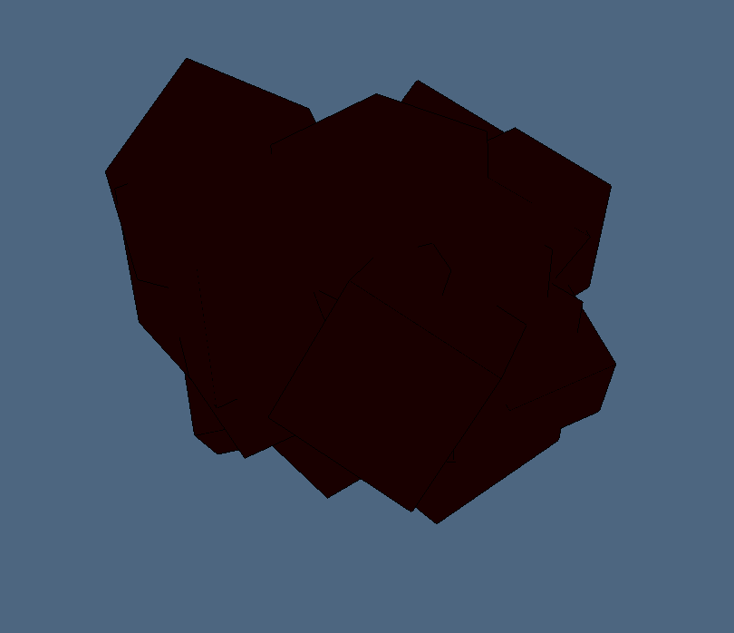
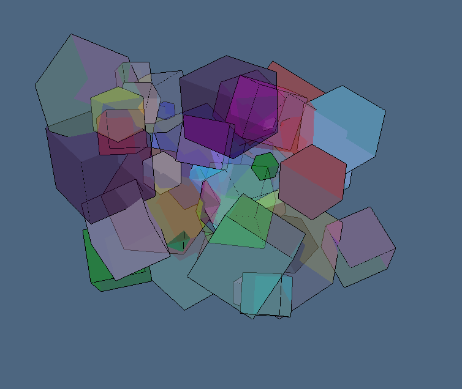
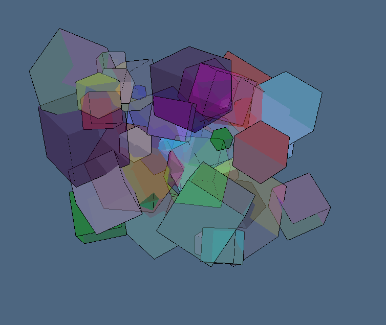

Esempio randomcubes.jl
using LinearAlgebraicRepresentation
Lar = LinearAlgebraicRepresentation
using ViewerGL, LinearAlgebra
GL = ViewerGL
#include("")
store = [];
scaling = 1.5;
V,(VV,EV,FV,CV) = Lar.cuboid([0.25,0.25,0.25],true,[-0.25,-0.25,-0.25]);
mybox = (V,CV,FV,EV);
for k=1:50
size = rand()*scaling
scale = Lar.s(size,size,size)
transl = Lar.t(rand(3)...)
alpha = 2*pi*rand()
rx = Lar.r(alpha,0,0); ry = Lar.r(0,alpha,0); rz = Lar.r(0,0,alpha)
rot = rx * ry * rz
str = Lar.Struct([ transl, scale, rot, mybox ])
obj = Lar.struct2lar(str)
vs = obj[1]
diag = LinearAlgebra.norm(vs[:,8]-vs[:,1])
if diag > 1/5
push!(store, obj)
end
end
str = Lar.Struct(store);
V,CV,FV,EV = Lar.struct2lar(str);
# V = Plasm.normalize3D(V) TODO: solve MethodError bug
include("./MAKEtests.jl")
viewStruct(V,CV,FV,EV)
Immagini randomcubes.jl
 
 
